Système de conception GCWeb
Les modèles et les composantes GCWeb sont utilisés pour Canada.ca. Dans ce système de conception, vous trouverez des composantes, des modèles et les principes de base de la conception pour tout le site Canada.ca, ainsi que des éléments spécifiques aux pages Web de l'ARC.
Pour en savoir plus sur la structure et la terminologie du système de conception GCWeb, lisez l'aperçu du système de conception.
-
|
-
|
-
|
-
|
-
Tous les éléments du système de conception
Comprend toutes les composantes, les modèles, et les principes de base de la conception.
Que sont les éléments de base du GC, les éléments spécifiques à l'ARC et les variantes de l'ARC?
Éléments de base du GC
Éléments du système de conception de Canada.ca ainsi que d'autres éléments de la Boîte à outils de l'expérience Web recommandés pour les sites Web du gouvernement du Canada.
Éléments spécifiques à l'ARC
Éléments de conception créés et testés à l'ARC et utilisés spécifiquement pour les pages Web de l'ARC.
Variantes de l'ARC
Une variante des éléments du GC qui ajoute des directives ou des renseignements supplémentaires sur l'utilisation de ces éléments pour le contenu de l'ARC.
| Banniere | Titre | Resume | Tapez | Categorie | Balises |
|---|---|---|---|---|---|
| 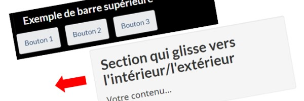 |
Affichage des données (anglais seulement) |
Ajouter une superposition lorsqu'une section sort de la fenêtre d'affichage |
Composantes | Éléments de base du GC | Superposition, Visible, Invisible, Afficher, Caché, Fermer, Quitter, Barre, Navigation |
| 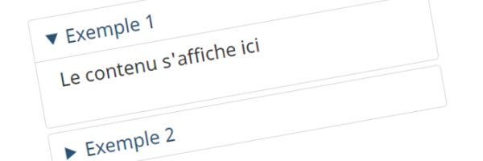 |
Afficher/masquer |
Style accordéon qui permet à l'utilisateur d'afficher ou de masquer le contenu secondaire à la demande |
Composantes | Éléments de base du GC | Accordéon, masquer, caché, options |
Alertes |
Des messages utilisant un code de couleurs visant à fournir une rétroaction contextuelle sur les actions de l'utilisateur ou les changements importants apportés aux informations ou à la disponibilité des services |
Composantes | Éléments de base du GC | Couleur, changement | |
| 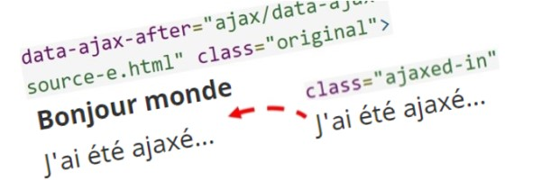 |
Appel de données Ajax (anglais seulement) |
Permettre à des parties d'une page Web de se charger ou de se mettre à jour dans une deuxième page Web (réutilisation du contenu) |
Composantes | Éléments de base du GC | insertion, contenu, appel, charger |
| 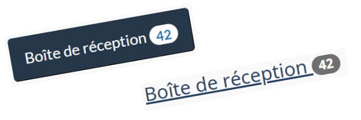 |
Badges (anglais seulement) |
Des indicateurs numériques qui mettent en évidence le nombre de mises à jour, d'éléments nouveaux ou non lus associés à un lien |
Composantes | Éléments de base du GC | Liens, Compteur, Nombre |
Basculer (anglais seulement) |
Permettre à un élément de basculer entre l'état actif et l'état inactif |
Composantes | Éléments de base du GC | développer, cacher, réduire, accordéon | |
| 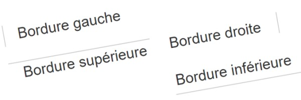 |
Bordures (anglais seulement) |
Ajouter une ou plusieurs bordures à des éléments de conception, supprimer des bordures ou tailler les coins qui font partie de composantes de conception comme les « puits » |
Composantes | Éléments de base du GC | Règle horizontale, tailler les coins |
| 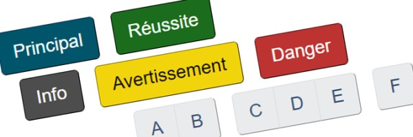 |
Boutons |
Créer un appel à l'action qui incite l'utilisateur à soumettre le contenu d'un formulaire ou qui l'amène à une page Web fournissant des informations supplémentaires |
Composantes | Éléments de base du GC | Couleur, Liens |
| 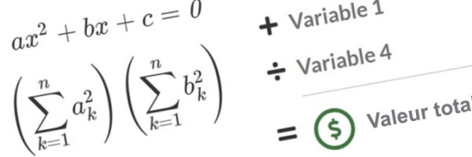 |
Calculs et équations mathématiques (anglais seulement) |
Afficher les formules mathématiques dans une page |
Composantes | Éléments de base du GC | Variables, Calculs |
| 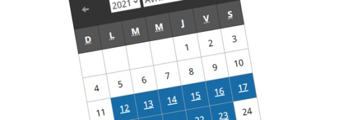 |
Calendrier (anglais seulement) |
Interface permettant de naviguer dans une liste chronologique d'événements |
Composantes | Éléments de base du GC | Tableaux, Dates |
| 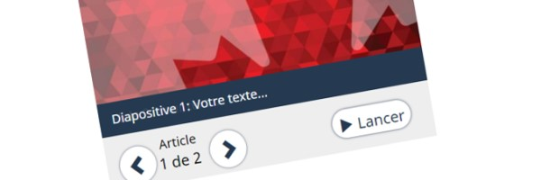 |
Carrousel |
Faire défiler le contenu sous forme de diaporama |
Composantes | Éléments de base du GC | Onglets, Invisible, Diaporama, Afficher, Images, Défilement, Détails, Résumé, Agrandir, Galerie |
Citations (anglais seulement) |
Citer une phrase appartenant à quelqu'un d'autre que l'auteur ou le locuteur original |
Composantes | Éléments de base du GC | bloc-citation | |
| 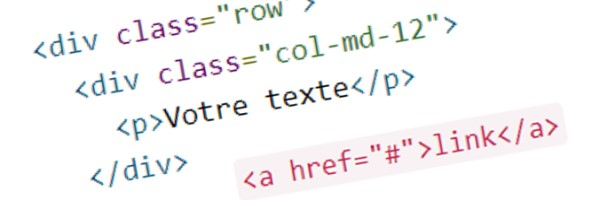 |
Code (anglais seulement) |
Émuler un code source et l'afficher dans une police de caractères à espacement fixe |
Composantes | Éléments de base du GC | Codage, Embellir |
Conception de type « et/ou » |
Indiquer clairement qu'il existe des options ou que des blocs de contenu sont complémentaires ou associés |
Composantes | Éléments spécifiques à l'ARC | Options, colonnes | |
Contactez-nous |
Donner accès à différentes possibilités de contact et les présenter de manière cohérente dans divers contextes |
Composantes | Éléments spécifiques à l'ARC | questions interactives, mon dossier d'entreprise, en ligne, téléphone, ats, appel, numéros de téléphone, heures d'ouverture | |
| 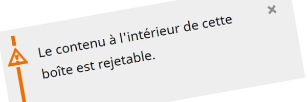 |
Contenu écartable (anglais seulement) |
Permettre à l'utilisateur d'écarter du contenu non principal qu'il doit voir seulement une fois |
Composantes | Éléments de base du GC | Écarter, masquer, contenu secondaire |
Contenu visible et invisible (anglais seulement) |
Afficher ou masquer du contenu, y compris les styles spécifiques aux technologies d'assistance (soutenir les utilisateurs de lecteurs d'écran), à la conception réactive, à l'utilisation générale et à l'impression |
Composantes | Éléments de base du GC | Impression, caché, périphériques, fenêtres d'affichage, résolution | |
Couleurs |
Couleurs obligatoires pour le contenu Web de Canada.ca |
Base | Éléments de base du GC | ||
Diagrammes et graphiques |
Méthodes de présentation permettant de communiquer des données ou des statistiques |
Composantes | Éléments de base du GC | Graphiques, Barre, Valeurs | |
Effets de modification du texte |
Utilisation d'effets tels que le texte surligné, le texte supprimé et le texte barré |
Base | Éléments de base du GC | Modifications, versions, documents | |
| 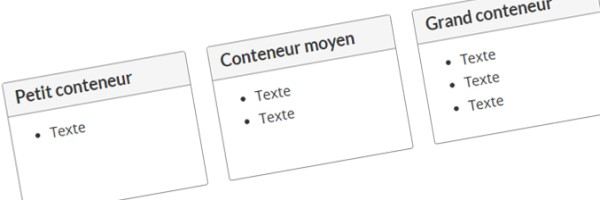 |
Égalisation des hauteurs (égaliser) (anglais seulement) |
Égaliser la hauteur des éléments situés sur la même ligne de base |
Composantes | Éléments de base du GC | Panneaux, puits, bordures |
| 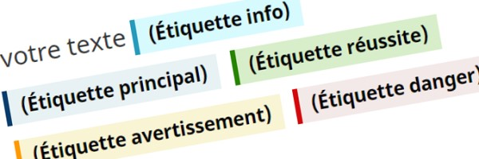 |
Étiquettes |
Attirer l'attention sur une section du contenu en ajoutant des informations complémentaires courtes et textuelles. |
Composantes | Éléments de base du GC | Couleur, Attention |
Expiration de la session (anglais seulement) |
Prévenir les utilisateurs lorsque leur session est sur le point d'expirer |
Composantes | Éléments de base du GC | sortie, redirection, délai d'attente | |
Fenêtres contextuelles (anglais seulement) |
Afficher des images et d'autres contenus dans une boîte de dialogue, soit individuellement ou dans une galerie |
Composantes | Éléments de base du GC | boîte de dialogue, superposition, modèle, galerie | |
| 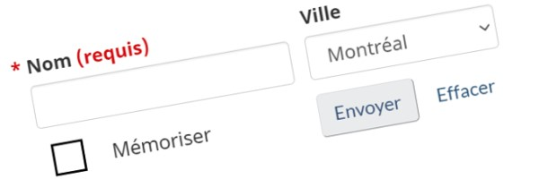 |
Formulaires et éléments de formulaire (anglais seulement) |
Créer un formulaire pour recueillir et transmettre les renseignements entrés par les utilisateurs dans un format prédéfini |
Composantes | Éléments de base du GC | rétroaction, cases à cocher de validation, boutons radio, étiquettes, entrée, sélection, zone de texte, fichier, sélecteur de date, soumettre, effacer, compléter automatiquement |
Grilles (anglais seulement) |
Créer des mises en page à l'aide d'une série de lignes et de colonnes qui renferment du contenu |
Composantes | Éléments de base du GC | Réactif, Écrans de visualisation, Appareils, Résolution | |
Icônes |
Utiliser l'un des deux ensembles d'icônes, Glyphicons ou Font Awesome, à des fins esthétiques |
Composantes | Éléments de base du GC | Couleur, Images, Polices de caractère | |
Identificateur de pays (anglais seulement) |
Charger ou remplacer le contenu d'un élément en fonction du pays de l'utilisateur |
Composantes | Éléments de base du GC | Emplacement | |
Image relative aux données (anglais seulement) |
Permettre à une page Web de spécifier différentes sources d'images à afficher en se basant sur les requêtes de média |
Composantes | Éléments de base du GC | Images, Résolution | |
Images |
Contenu visuel qui complète ou enrichit le texte, y compris les photographies, les graphiques, les dessins ou les diagrammes |
Composantes | Éléments de base du GC | Thumbnais, Responsive, Photos, Visual, Decorative | |
| 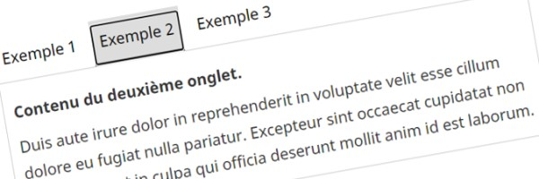 |
Interface à onglets |
Séparer du contenu connexe dans différents panneaux qui peuvent être affichés un par un en cliquant sur l'onglet correspondant |
Composantes | Éléments de base du GC | développer, cacher, onglets, invisible |
Liens |
Coder un mot, une phrase ou une image pour permettre à l'utilisateur de naviguer, de consulter ou d'interagir avec le contenu |
Composantes | Variantes de l'ARC | Hyperliens | |
Listes |
Des listes à puces, listes numérotées, listes de descriptions et des améliorations telles que les listes de vérification interactives, les listes filtrées, etc. |
Composantes | Variantes de l'ARC | interactif, ordonné, non ordonné, puces, filtres, colonnes | |
| 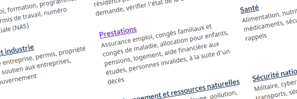 |
Menu d'accueil thématique |
Pour présenter des ensembles de liens et de descriptions affichés dans des blocs concis |
Composantes | Variantes de l'ARC | Services et informations, sujets, liens |
Mise en forme du texte |
Accentuation, taille, couleur, alignement, renvoi à la ligne et tronquage du texte |
Base | Éléments de base du GC | gras, italique, souligné, aligner, gauche, droite, centrer, envelopper, tronquer | |
| 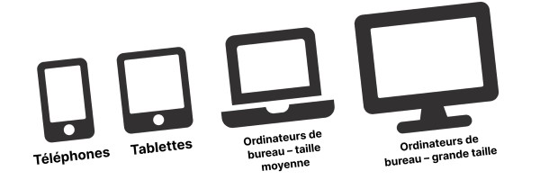 |
Mise en page |
Mise en page des pages Web de Canada.ca, y compris la bannière, le pied de page, la largeur et les points d'interruption |
Base | Éléments de base du GC | |
Navigation de style métro |
Diviser un contenu long et complexe lié à une même tâche en le fractionnant en sous-tâches |
Modeles | Variantes de l'ARC | ||
| 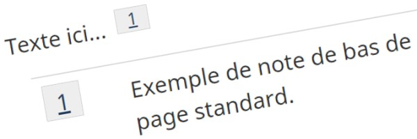 |
Notes de bas de page (anglais seulement) |
Créer une note, une référence, une citation ou un commentaire qui s'affiche en bas de la page |
Composantes | Éléments de base du GC | Références, liens, citations |
Opacité (anglais seulement) |
Appliquer de la transparence à un élément de premier plan pour que l'arrière-plan devienne visible |
Base | Éléments de base du GC | invisible | |
Outil de rétroaction sur la page |
Permettre aux utilisateurs de fournir une rétroaction ou de signaler un problème rencontré sur une page Web spécifique ou sur le site Web en général |
Composantes | Éléments de base du GC | Erreurs, validation, questions, commentaires, fautes | |
Page d'accueil institutionnelle |
Page d'accueil obligatoire pour les institutions et les organisations du gouvernement du Canada |
Modeles | Éléments de base du GC | ||
| 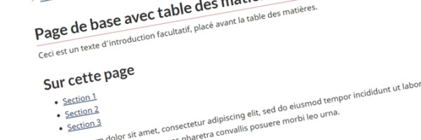 |
Page de base |
Mise en page de base pour les pages de contenu de Canada.ca qui peut être combinée avec des composantes appropriées |
Modeles | Éléments de base du GC | |
Pages de campagne |
Des pages promotionnelles à durée limitée conçues pour communiquer, éduquer, influencer, commercialiser, sensibiliser et appeler à l'action |
Modeles | Éléments de base du GC | Promotion, marketing | |
Page de sujet |
Permettre de naviguer vers les sujets et les pages de destination qui aident à réaliser une tâche |
Modeles | Éléments de base du GC | ||
| 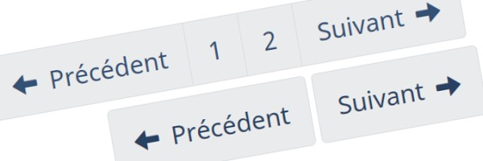 |
Pagination (anglais seulement) |
Pour les longs documents répartis sur plusieurs pages, permettre à l'utilisateur de naviguer entre les pages en utilisant les hyperliens « Suivant », « Précédent » ou (s'il y a lieu) les hyperliens de pagination numériques |
Composantes | Éléments de base du GC | Buttons, Links, Navigation |
| 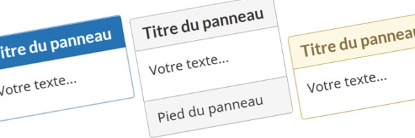 |
Panneaux (anglais seulement) |
Créer un regroupement visuel de contenu à l'aide de différents thèmes de couleurs, ainsi que des en-têtes et pieds de page distincts |
Composantes | Éléments de base du GC | Boîtes, Menu, Navigation, Disposition |
| 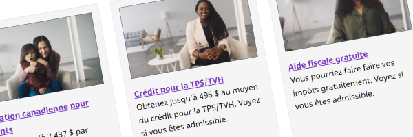 |
Promotions contextuelles |
Des composantes d’intérieur de page servant à promouvoir des activités, des initiatives, des programmes et des services gouvernementaux |
Composantes | Éléments de base du GC | Promotion, marketing, campagne |
Proximité des marges (anglais seulement) |
Augmenter ou diminuer l'espace vide entre les éléments pour permettre de savoir si les éléments sont liés ou non |
Composantes | Éléments de base du GC | Espacement, Marges, Gauche, Droite, Haut, Bas | |
| 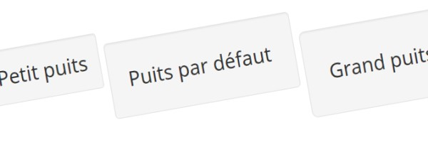 |
Puits (anglais seulement) |
Mettre du contenu en évidence en le plaçant dans une case gris clair |
Composantes | Éléments de base du GC | Disposition, Boîtes |
Question interactives (field flow) |
Présenter aux utilisateurs une séquence de questions simples qui mènent à la réponse précise dont ils ont besoin pour poursuivre leur tâche ou la terminer. |
Composantes | Éléments de base du GC | arbre décisionnel | |
Table des matières |
Provide an outline for the content of a page that has multiple subsections |
Composantes | Éléments spécifiques à l'ARC | Sur cette page | |
| 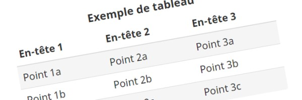 |
Tableaux (anglais seulement) |
Organiser des données en lignes et en colonnes afin de créer des cellules de données |
Composantes | Éléments de base du GC | Tabulaire, bande zébrée, survol, réactif, couleur, validateur de tableau |
Titres et sous-titres |
Créer des sous-titres de contenu qui sont grands, gras, hiérarchiques et concis |
Composantes | Variantes de l'ARC | Taille, Texte, Titres | |
Touches de clavier (anglais seulement) |
Reproduire les touches d'un clavier d'ordinateur |
Composantes | Éléments de base du GC | ||
Typographie |
Polices de caractères pour les en-têtes et le corps du texte, longueur des lignes et apparence des liens |
Base | Éléments de base du GC | ||
Variables (anglais seulement) |
À utiliser quand il y a une référence à une variable comme « x », « n » ou « o » dans une phrase (une expression non mathématique) |
Composantes | Éléments de base du GC | Calculs | |
Vidéo et audio |
Ajouter des clips vidéo et des enregistrements audio pour compléter ou enrichir le texte |
Composantes | Éléments de base du GC | Lecteur multimédia, transcriptions, sous-titres codés, licences |


- Date de modification :